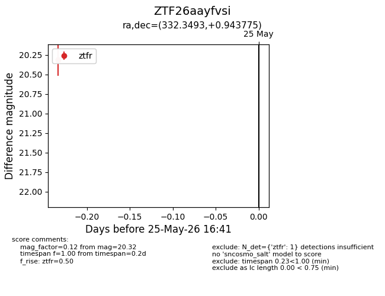
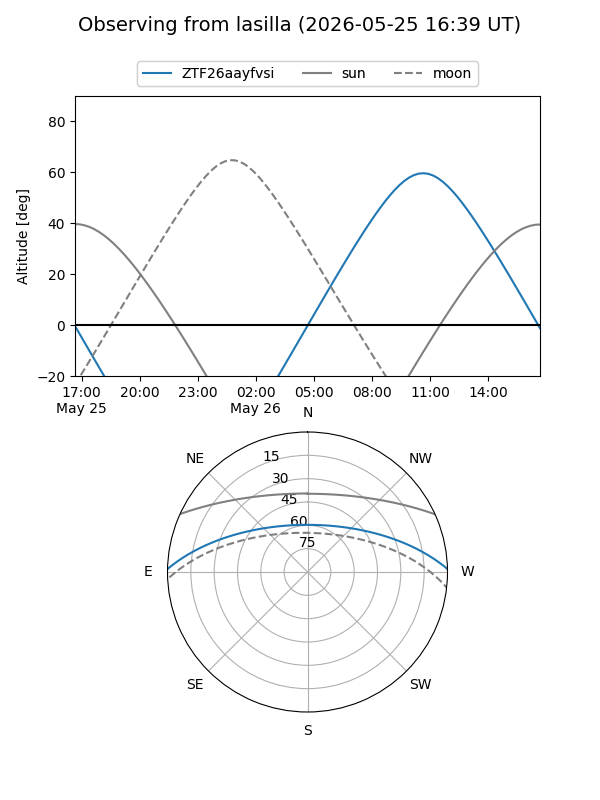
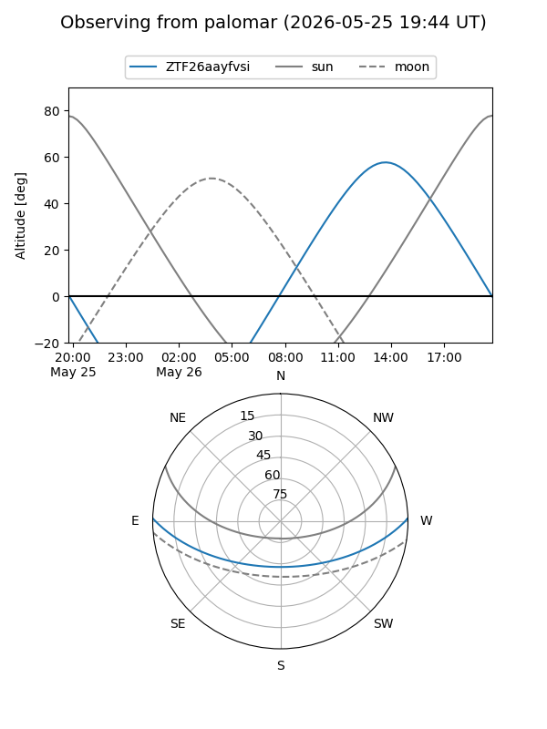
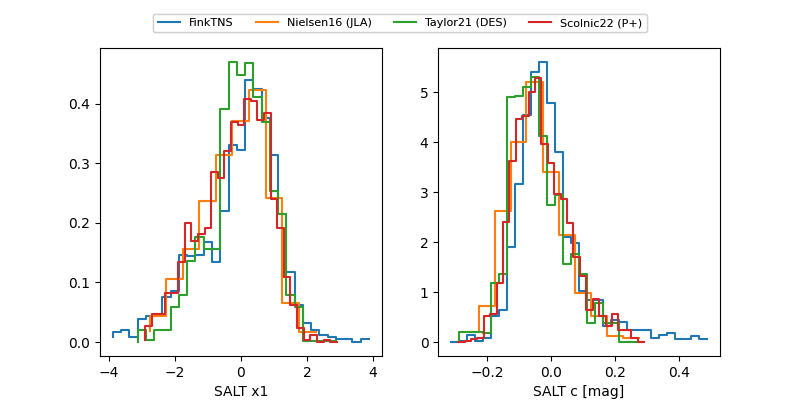

ZTF26aayfvsi
Target ZTF26aayfvsi at 2026-05-25 16:43
Aliases and brokers:
lsst-FINK: link
lsst-Lasair: link
lsst-ALeRCE: link
ztf-FINK: link
ztf-Lasair: link
ztf-ALeRCE: link
alt names
ZTF26aayfvsi (ztf,fink_ztf)
Coordinates:
equatorial (ra, dec) = 332.3493,+0.94377
equatorial (HMS+DMS) = 22:09:23.84,+00:56:37.59
galactic (l, b) = (62.0177,-41.99359)
Flags:
Photometry:
last ztfr=20.32
1 ztfr detections
Lightcurve

Visibility


Additional plots
